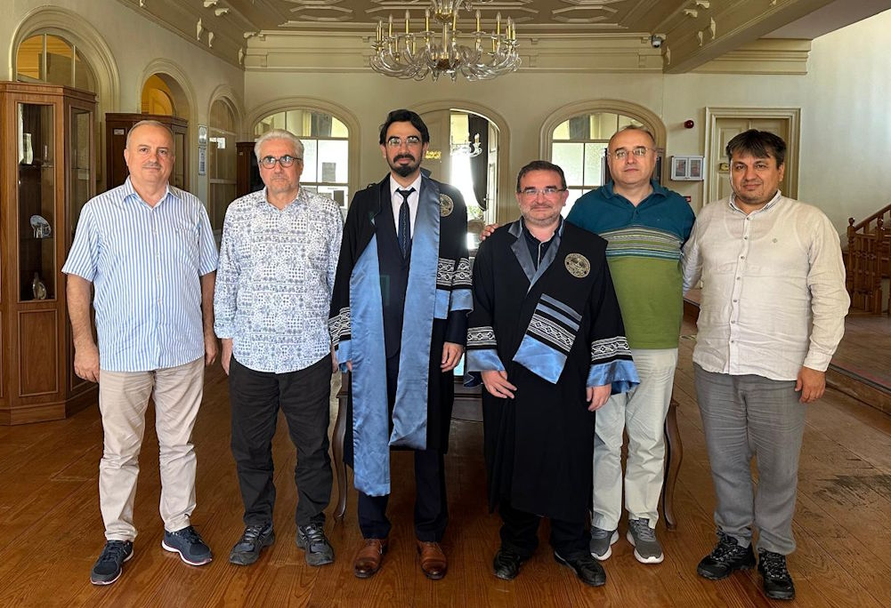
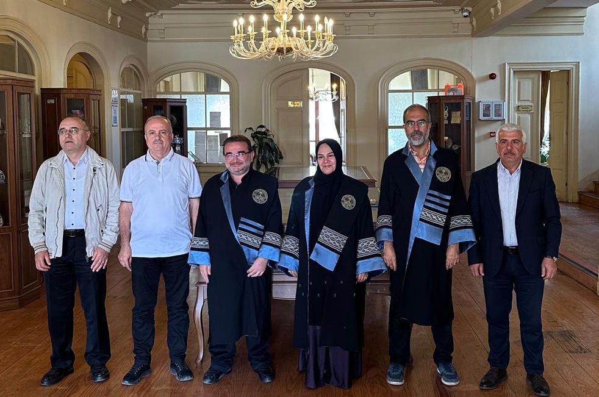
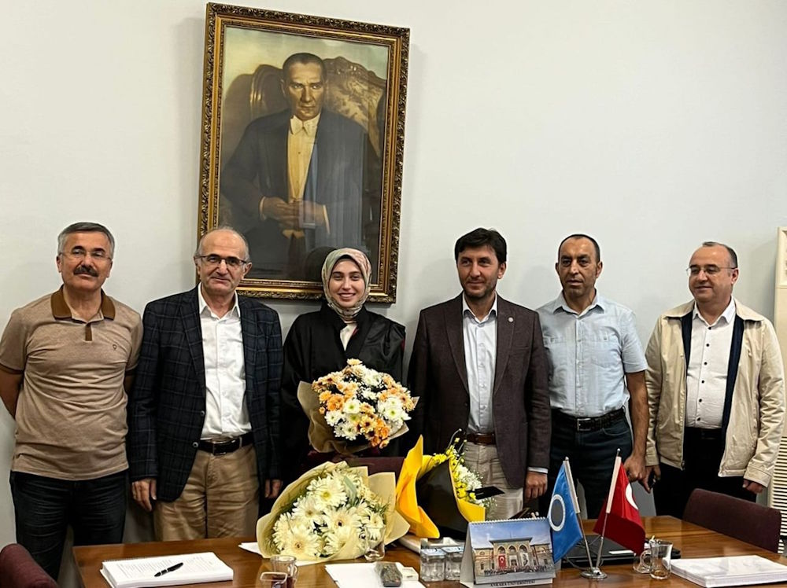
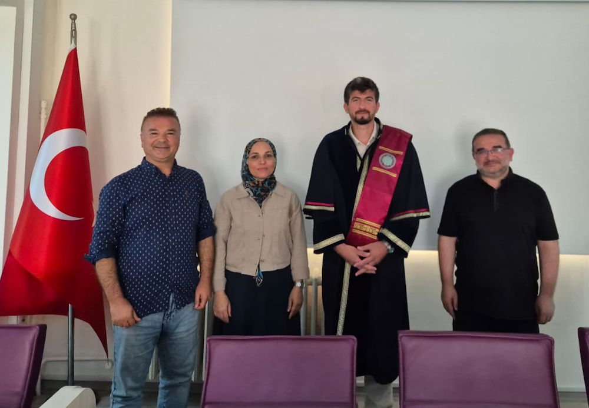
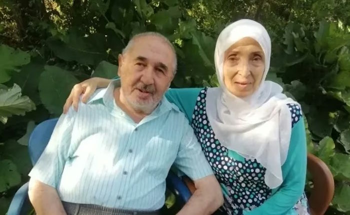
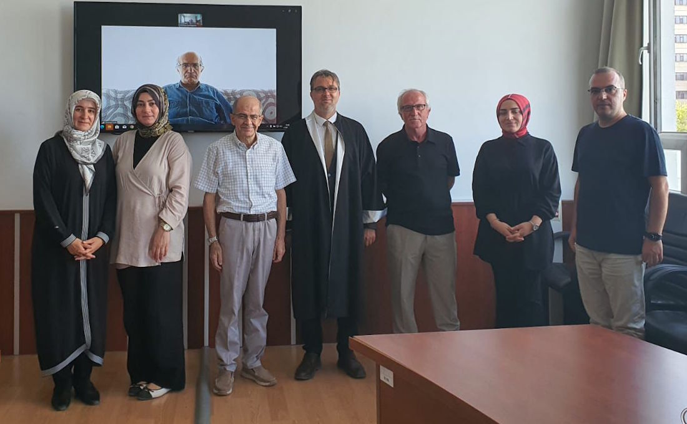

Mezhepler tarihi çalışmalarının ortak hafızası
Türkiye'deki İlahiyat ve İslami İlimler fakültelerinin İslam Mezhepleri Tarihi akademisyenlerini, tezlerini, kitaplarını ve makalelerini tek çatı altında, özetleriyle birlikte derliyoruz.
“Gelişmesi ve zenginleşmesi için İslam Mezhepleri ile ilgilenen herkesin katkılarını bekliyoruz.”
Eser Veritabanı
Yüksek lisans ve doktora tezleri, telif ve tercüme kitaplar, makaleler ve tebliğler — Türkçe özet ve İngilizce abstract'larıyla.
Akademisyenler
149 öğretim elemanı, 65 üniversite
Haberler
Yeni doktorlar, atamalar, unvanlar
Etkinlikler
47 sempozyum ve toplantı
Galeri
517 fotoğraf, 22 albüm
Son haberler
Bilim dalımızdan yeni doktorlar, unvan ve atamalar, vefat haberleri ve duyurular.

Yeni Doktor: Mikail YAŞAR
Doç. Dr. Adem Arıkan Danışmanlığında Mikail Yaşar’ın hazırladığı “Vehhâbîlerin Matürîdiliğe Yönelik Eleştirileri” adlı doktora tezi Prof. Dr. Mehmet Ümit, Prof. Dr. Halil İbrahim Bulut, Doç. Dr. Rıdvan Özdinç ve Dr. Öğr. Üyesi Mehmet Toprak’ın huzurunda 18.09.

Yeni Doktor: Leyli Sedef KALAYCI
Doç. Dr. Adem Arıkan danışmanlığında Leyli Sedef Kalaycı’nın hazırladığı “İngiliz İşgali Döneminde (1857-1947) Hint Alt Kıtasında Barelviyye Ekolü” başlıklı doktora tezi Prof. Dr. M. Ali Büyükkara, Prof. Dr. H. İbrahim Bulut, Prof. Dr. Ramazan Bulut, Prof. Dr.

Yeni Dr. Öğr. Üyesi: Mine DEMİRBİLEK
Trabzon Üniversitesi İlahiyat Fakültesi’nden Arş. Gör. Dr. Mine Demirbilek Dr. Öğr. Üyesi kadrosuna atanmıştır. Kendisini tebrik eder, başarılarının devamını dileriz.

Yeni Doktor: Muhammet Usame KARADENİZ
Aydın Adnan Menderes Üniversitesi İlahiyat Fakültesinde Araştırma görevlisi Muhammed Usame Karadeniz, Doç. Dr. Mehmet Çelenk danışmanlığında yürüttüğü '1979'dan Günümüze Türkiye İslamcılarının İran-Şiı Algısı' adlı tezini Prof. Dr. İbrahim Gürses, Doç. Dr. Ade

Vefat: Lütfi ŞENEL
Konya’da Yüksek İslam Enstitüsü müdürlüğünde de bulunmuş olan emekli İslam Mezhepler Tarihi öğretim üyesi Lütfi Şenel hocamız 07.08.2025 tarihinde vefat etmiştir. Allah rahmet eylesin, mekanı cennet olsun. Ailesine ve tüm Mezhepler Tarihi camiasını başsağlığı

Yeni Doktor: Mustafa DUMLUPINAR
Ankara Üniversitesi Sosyal Bilimler Enstitüsünden Mustafa Dumlupınar “XI. Yüzyıl Siyâsetnâme Türü Eserlerde İmâmet-Hilâfet Tartışmaları” başlıklı doktora tezini Prof. Dr. Osman Aydınlı, Prof. Dr. Sönmez Kutlu, Prof. Dr. Ömer Faruk Teber, Prof. Dr. Hasan Yücel
2007'den bugüne dokuz buluşma
Anabilim dalının ülke çapındaki öğretim elemanlarını bir araya getiren geleneksel koordinasyon toplantıları.
Öne çıkan eserler
İslam Mezhepleri Tarihinde Usul Sorunu
Sönmez Kutlu · 2003 · Mezhepler Tarihinde Metodoloji Problemi İlmi İhtisas Toplantısı, 27-28 Eylül 2003, TDV İslam Araştır
Bir Bilim Dalı Olarak İslam Mezhepleri Tarihi ile İlgili Metodolojik Problemler
Mehmet Ali Büyükkara · 2003 · Mezhepler Tarihinde Metodoloji Problemi İlmi İhtisas Toplantısı, 27-28 Eylül 2003, TDV İslam Araştırmaları Merkezi (İSAM), Bağlarbaşı, İstanbul
73 Fırka Hadisinin Mezhepler Tarihi Kaynaklarında Fırkaların Tasnifine Etkisi
Kadir Gömbeyaz · 2005 · Uludağ üniversitesi ilahiyat fakültesi dergisi
Sakife Olayı veya Hz. Ebu Bekir’in Halife Seçimi
Ethem Ruhi Fığlalı · 1982 · İslam Medeniyeti
Mezhepler Arasındaki Farklar (el-Fark beyne’l-fırak)
Abdulkahir el-Bağdadi · 1991 · Türkiye Diyanet Vakfı
Emeviler Devri Sosyal Hayatında Mezheplerin Oluşumu ve Gelişmelerine Etkileri
Bilal Güler · Erciyes Ü. SBE.
Yeni eklenen akademisyenler
Muhammed Usame Karadeniz
Lokman Tokdemir
M. Mustafa Buğcu
Ali Osman Balcı
Muhammed İkbal Çoban
Salih Kalkan
Bekir Altun
Şükrü Bostancı
Katkılarınızı bekliyoruz
Sitemizin temel amacı Mezhepler Tarihi çalışmalarını eksiksiz ve özetleriyle birlikte derlemek. Öncelikle kendi çalışmalarınız olmak üzere tashih ve eklemelerinizi bize iletin.